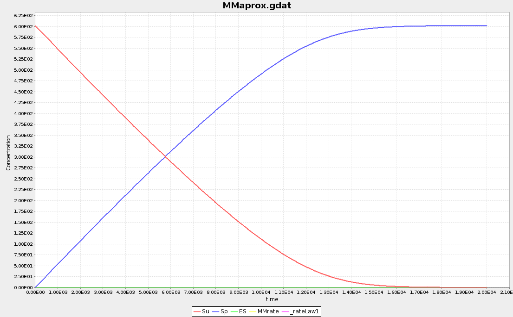

Author : Adolfo Hoyos Díaz
Advisor : Diana Hermith Ph.D.
This session brings a mini project described in this file .
From now on on this text, I present my answers to the questionary delivered by Dr. Diana Hermith.
In this part of the practice, we study two dynamics described in exact dynamics file and the [approximate dynamics file][1/approx_source].
The exact dynamics has the next reactions
ES bind reaction:
$E + S \longleftrightarrow ES$ detailed as:
$E(s) + S(Y \sim 0) \array{k_{p_1} \\ \longleftrightarrow \\ k_{m_1} } E(s!1).S(Y \sim 0!1)$
with
$k_{p_1} = \frac {1} {N_{Av}}$
$k_{m_1}=\frac{1}{10}$ ESconvert :
$ES \rightarrow E+S$ detailed as:
$\array{ \\E(s!1).S(Y \sim 0!1)} \array{k_2 \\ \longrightarrow} \array{ \\E(s) + S(Y \sim P) }$ with
$k_{2}= \frac{1}{100}$
With the initial concentrations
$ E_0 =\frac{1}{100}\times N_{Av}$
$S_0 = 1\times N_{Av}$
Meanwhile the approx file describes only one reaction:
$E+S\rightarrow E+S$ detailed as:
$\array{ \\ E(s) + S(Y \sim 0)} \array{\frac{kcat}{(Km + Su)} \\ \longrightarrow} \array{ \\E(s) + S(Y \sim P) }$ with
$k_f=\frac{1}{N_{Av}}$
$k_r=\frac{1}{10}$
$k_{cat}=\frac{1}{100}$
$k_m=\frac{k_{cat}+k_r}{k_f}$
with the same initial concentrations.
We can see that both reactions start with the same concentrations of enzyme and dephosporylated substrate and, although the exact reaction describes an intermediate step in which the initial seed converts into the ES substance, both reactions end with enzyme and phosphorylated substrate. We are yet to check, through simulation, whether the result is the same or not… most probably not:
The reaction rate of the approx file
depends on the concentration of dephosporylated compound SU; this will speed up the reaction since the rate will grow as the concencentration of SU decreases.
| Feature | Units | Exact | Aprox |
|---|---|---|---|
| Volume |
|
1 | 1 |
Stability of the process is reached around
ES compund starts from
despite it may not ve obvious, the next graphic, obtained simulating the approx file, (almost) exactly overlaps with the previous graphic.

We apreciate that the ES compound is being monitored as an observable variable, even when this substance is not present in the described reaction. This leads to the next graphic:
that shows this variable always as zero, as should be expected.
The results for the
and, although the wave form relates (almost) exactly to the ES evolution of the
exact
reaction, the values are two orders of magnitud below, going from
For this part, we added the function:
$ES_{eff} = E_0 \times \frac{Su}{k_m + S_u}$
let’s remember we have
$k_f=\frac{1}{N_{Av}}$
$k_r=\frac{1}{10}$
$k_{cat}=\frac{1}{100}$
$k_m=\frac{k_{cat}+k_r}{k_f}$
so
$ES_{eff} = E_0 \times \frac{Su}{\frac{k_{cat}+k_r}{k_f} + Su}$
The graph obtained for this function from the simulation results is shown next, and it overlaps with the ES complex of the exact reaction.
The proposed reaction scheme is described with the following equations:
Only by taking a quick look at these equation, we can expect a complete depletion of A in order to generate X , and of X to generate C . Also, we should expect some byproducts of this main reaction, like some remaining B , Y and D ; this of course depends on the initial concentrations of all components.
A Biocham code that describes these equations, with only some concentrrations of A and B are considered initially, is shown next:
MA (K1) for A => X.
MA (K2) for B + X => Y + D.
MA (K3) for 2*X + Y => 3*X.
MA (K4) for X => C.
parameter(K1, 1).
parameter(K2, 1).
parameter(K3, 1).
parameter(K4, 1).
present(A, 1).
present(B, 1).
These initial concentrations were selected as shown in the previous code since component A and B would generate the rest of the necessary substances of the reaction scheme.
The ordinary differencial equations (ODE) simulation results are shown on next figure:
As expected before, we can observe that A is completely consumed. Also, although there is no X ‘s initial concentration, it is initially produced (from A and then with help of Y ), but later is completely consumed. We also can see that the initial substance B does not completely react and a little more than half of it (~55%) still remains at stabilization time. At this same time, the most abundant substance is C , and the byproducts D and Y are not completely utilized. There is less of Y than of D since the former reacts with X to produce more X .
Additionally, a stochastic simulation (using Gillespie method), which describes a very similar behavior than the previous one, is shown next:
![][brusStocastic
On the other hand, Biocham’s boolean simulator gave the next result:
We need to have in mid that, we most likely won’t get the same plots from the stochastic and Boolean simulators, since they are, well, stochastic: they model a non-deterministic or random behavior.
The shown Boolean simulation plot also suggests a depletion of A and X , while all other components remain in the system: C is generated before the simultaneouly appearing D and Y , while B is always present.
In this section I’m going to show the evaluation results of the proposed CTL queries:
This boolean query tells us if the expression we are evaluating is going to happen somewhere in time. Of course, when we submit components of this reaction, and as we have seen in the previous simulation results, all the components are present in the system at a given moment. This is seen as the result of the query being a “true” value.
When we try a reachable (or any other) property query of a molecule that we have not defined in our model, we get the following error message:
The steady query tells us if a expression reaches a steady value in any point in time. As we have seen previously, all the types of simulations we ran have told us that all molecules reach a steady concentration in the system. This is confirmed by the boolean simulation using CTL, shown next:
The stable query tells us something like:
The results of the queries for every component of our reactions are shown next:
Summarizing the previous results:
| Component | Stable? |
|---|---|
| A | false |
| B | false |
| X | false |
| Y | false |
| D | true |
| C | true |
This is clear if we think that none of the reactions:
describe any consumption of D or C , so these components, once present in the system, will remain there.
In this section, we are being asked to analyze the statement:
“Biological organisms are complex because they are characterized by hierarchies of self-assembled networks. Networks of interacting molecules at the level of the cell, interacting molecules and cells at the level of tissues, interacting organs at the level of the organisms, and interacting organisms at the level of ecosystems. These interactions/networks are well organized in space and time, normally, they are non-linear and there are a large number of them”
from the point of view of the texts:
So, I’m taking quotes from both texts, that argument the mentioned statement.
In the Introduction section, page 357, the text says:
- Cells are composed of a very large number and variety of components interacting in space and time.
- Cell-biological systems are difficult to observe.
- The dynamic functioning of cells is of a nonlinear nature.
- Living systems are subject to continuous change.
The first three items of the quoted list address some very important characteristics of living systems, and they summarize the main ideas of the analyzed statement, adding the non-stationary nature of life.
Now, on the next page appears the next fragment:
The term “self” in “self-organization” suggests a form of closure of the system to outside influences, a kind of autonomy. Physically a cell is an open system which relies on a constant exchange of energy, matter and information with its environment. The closure of a living system is therefore not with respect to material causes but with respect to efficient causation: 1 In a living system each part/process is at once cause and effect, a means and an end — the cell is a self-organizing biochemical system that fabricates itself [ Wolkenhauer, et al., 2007 ].
Living systems are thus self-referential, every part owes its existence/explanation to the organization of the remaining parts. Through cyclic self-organizing and self-maintaining processes, parts generate the whole as does the whole define the context in which its parts function. The principle of autonomous self-fabrication is a, if not the, fundamental property that distinguishes living from non-living systems.
The “self-assembled networks” mentioned by the studied statement can be related to the “self-organization” mentioned in the previous piece, and here it is discused the fact that this self-organization actually depends on all internal and external factors. This adds up to the idea of “well-organized interactions/networks, due the the explanation of their multilevel nature inside living systems.
Beginning of section 7, page 377:
“ The structural (physical/material) organization of cells is the outcome of an elaborate self-organizing process, involving gene expression, regulation, signalling and metabolism. This structural organization of the cell then serves as an environment for the cell’s functional organization, leading to growth, differentiation, proliferation and cell death (apoptosis). The cell is itself a component of a larger system with higher levels of structural and functional organization. “
Finally, this paragraph further explains the complexity of self-organized interactions of living systems.
From page 32, I quote:
“There is more to biology than sequences. Proteins and nucleic acids also have complex 3D structures that provide clues to their functions in the living organism. Molecular structures are usually represented as collections of atoms, each of which has a defined position in 3D space. Structure analysis can be performed on static structures, or movements and interactions in the molecules can be studied with
molecular simulation methods.”
Now, in this fragment, we can have a glance of the complexity of living systems, with the mention of the 3D structure of molecules inside cells as explanatory of the functions the perform, although the modelling of these structures is very demanding in terms of computation resources.